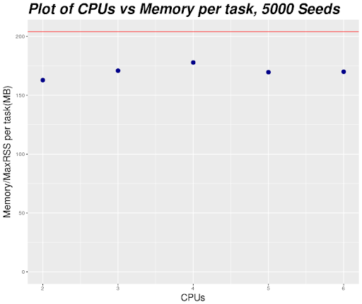
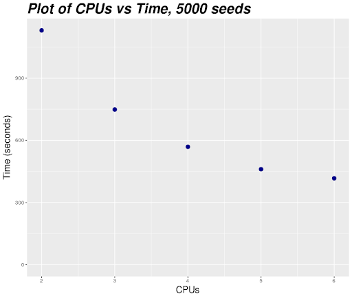
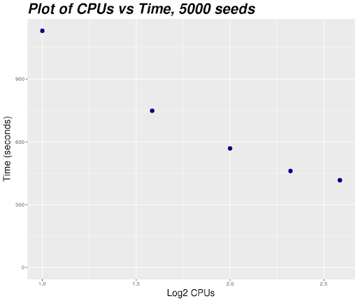
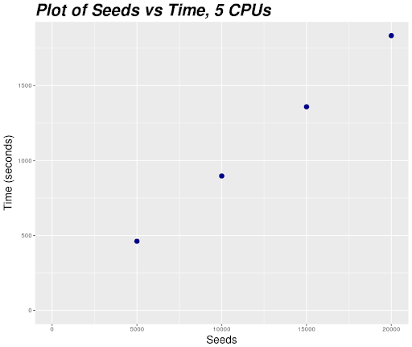

MPI Scaling Example
Warning
This page has been automatically migrated and may contain formatting errors.
In the example below we will use Python scripts to demonstrate how you might perform some basic scaling tests, however, the principles outlined in these examples are applicable across software applications. You do not need to know anything about Python to understand this article; it was merely chosen for the purpose of illustration.
Initial Python Script¶
#Imports numpy and mpi4py
import numpy as np
from mpi4py import MPI
#Retrieves MPI environment
comm = MPI.COMM_WORLD
#Sets size as the total number of MPI tasks
size = comm.Get_size()
#Sets rank as the specific MPI rank on all MPI tasks
rank = comm.Get_rank()
#sets x and y dimensions which will be used for the generated matrix
matrix = 1000
seeds = 60000
#If the rank is 0 (master) then create a list of numbers from 0-4999
#and then split those seeds number equally amoung size groups,
#other set seeds and split_seeds to $
if rank == 0:
seeds = np.arange(seeds)
split_seeds = np.array_split(seeds, size, axis = 0)
else:
seeds = None
split_seeds = None
#Scatter the seeds among each MPI task
rank_seeds = comm.scatter(split_seeds, root = 0)
#Create a array of zeros of the lenght of the MPI tasks seeds
rank_data = np.zeros(len(rank_seeds))
#For each number from 0 to the number of the MPI tasks,
#list of seeds and use one of those seeds to set the random seed
#(ensuring each random seed is different)
#Then create an array of random numbers with x and y equal to the
#matrix variable
#The calculate the dot product of the array with itself
for i in np.arange(len(rank_seeds)):
seed = rank_seeds[i]
np.random.seed(seed)
data = np.random.rand(matrix,matrix)
data_mm = np.dot(data, data)
rank_data[i] = sum(sum(data_mm))
rank_sum = sum(rank_data)
data_gather = comm.gather(rank_sum, root = 0)
if rank == 0:
data_sum = sum(data_gather)
print('Gathered data:', data_gather)
print('Sum:', data_sum)
You do not need to understand what the above Pythong script is doing, but for context, the script will create a list of numbers and split them between the available MPI tasks (ranks) then uses those numbers as seeds to create arrays of random numbers. The dot product of each array is then calculated and those numbers are summed together and sent back to the master task (via MPI) and all those numbers are summed together and the results are printed. The script will take the number of MPI tasks from the environment and and run it in parallel with that many ranks. We unfortunately do not know how many CPUs, how much memory (RAM) or how much time to request for this script to complete. This means the first thing we need to do is run a small scale test and see how long that runs for. So we will first try with 5,000 seeds rather than 60,000 seeds.
Revised Python Script¶
#Imports numpy and mpi4py
import numpy as np
from mpi4py import MPI
#Retrieves MPI environment
comm = MPI.COMM_WORLD
#Sets size as the total number of MPI tasks
size = comm.Get_size()
#Sets rank as the specific MPI rank on all MPI tasks
rank = comm.Get_rank()
#sets x and y dimensions which will be used for the generated matrix
matrix = 1000
seeds = 5000
#If the rank is 0 (master) then create a list of numbers from 0-4999
#and then split those seeds number equally amoung size groups,
#other set seeds and split_seeds to $
if rank == 0:
seeds = np.arange(seeds)
split_seeds = np.array_split(seeds, size, axis = 0)
else:
seeds = None
split_seeds = None
#Scatter the seeds among each MPI task
rank_seeds = comm.scatter(split_seeds, root = 0)
#Create a array of zeros of the lenght of the MPI tasks seeds
rank_data = np.zeros(len(rank_seeds))
#For each number from 0 to the number of the MPI tasks,
#list of seeds and use one of those seeds to set the random seed
#(ensuring each random seed is different)
#Then create an array of random numbers with x and y equal to the
#matrix variable
#The calculate the dot product of the array with itself
for i in np.arange(len(rank_seeds)):
seed = rank_seeds[i]
np.random.seed(seed)
data = np.random.rand(matrix,matrix)
data_mm = np.dot(data, data)
rank_data[i] = sum(sum(data_mm))
rank_sum = sum(rank_data)
data_gather = comm.gather(rank_sum, root = 0)
if rank == 0:
data_sum = sum(data_gather)
print('Gathered data:', data_gather)
print('Sum:', data_sum)
Now we need to write a Slurm script to run this job. The wall time, number of logical CPU cores and amount of memory (RAM) you request for this job will ideally be based on how this small-scale test runs on your local workstation, but if that is not possible, make an educated guess, and if the job fails increase the resources requested until is completes.
TIP: If you can, write your program so that it prints results and timing information out relatively frequently, for example every 100 or 1,000 iterations. That way, even if your job runs out of time or memory and gets killed, you will be able to see how far it got and how long it took to get there.
Slurm Script¶
#!/bin/bash -e
#SBATCH --job-name=MPIScaling2
#SBATCH --ntasks=2
#SBATCH --time=00:30:00
#SBATCH --mem-per-cpu=512MB
module load Python
srun python MPIscaling.py
Let's run our Slurm script with sbatch and look at our output from
sacct.
JobID JobName Elapsed TotalCPU Alloc MaxRSS State
-------------- ------------ ----------- ------------ ----- -------- ----------
6057011 MPIScaling2 00:18:51 01:14:30 4 COMPLETED
6057011.bat+ batch 00:18:51 00:00.607 4 4316K COMPLETED
6057011.ext+ extern 00:18:52 00:00.001 4 0 COMPLETED
6057011.0 python 00:18:46 01:14:30 2 166744K COMPLETED
Our job performed 5,000 seeds using 2 physical CPU cores (each MPI task will always receive 2 logical CPUs which is equal to 1 physical CPUs. For a more in depth explanation about logical and physical CPU cores see our Hyperthreading article) and a maximum memory of 166,744KB (0.16 GB). In total, the job ran for 18 minutes and 51 seconds.
We will initially assume that our job's wall time and memory will scale linearly with the number of iterations. However, we don't know that for certain that this is the case so we will need to understand the scaling behaviour of our job's resource requirements before we can submit our full job and be confident it will succeed.
To find out we are going to have to run more tests. Let's try running our script with 2, 3, 4, 5 and 6 MPI tasks/physical CPUs and plot the results:
JobID JobName Elapsed TotalCPU Alloc MaxRSS State
-------------- ------------ ----------- ------------ ----- -------- ----------
6057011 MPIScaling2 00:18:51 01:14:30 4 COMPLETED
6057011.bat+ batch 00:18:51 00:00.607 4 4316K COMPLETED
6057011.ext+ extern 00:18:52 00:00.001 4 0 COMPLETED
6057011.0 python 00:18:46 01:14:30 2 166744K COMPLETED
6054936 MPIScaling3 00:12:29 01:14:10 6 COMPLETED
6054936.bat+ batch 00:12:29 00:00.512 2 4424K COMPLETED
6054936.ext+ extern 00:12:29 00:00.003 6 0 COMPLETED
6054936.0 python 00:12:29 01:14:09 3 174948K COMPLETED
6054937 MPIScaling4 00:09:29 01:15:04 8 COMPLETED
6054937.bat+ batch 00:09:29 00:00.658 2 4432K COMPLETED
6054937.ext+ extern 00:09:29 00:00.003 8 0 COMPLETED
6054937.0 python 00:09:28 01:15:04 4 182064K COMPLETED
6054938 MPIScaling5 00:07:41 01:15:08 10 COMPLETED
6054938.bat+ batch 00:07:41 00:00.679 2 4548K COMPLETED
6054938.ext+ extern 00:07:41 00:00.005 10 0 COMPLETED
6054938.0 python 00:07:36 01:15:08 5 173632K COMPLETED
6054939 MPIScaling6 00:06:57 01:18:38 12 COMPLETED
6054939.bat+ batch 00:06:57 00:00.609 2 4612K COMPLETED
6054939.ext+ extern 00:06:57 00:00.006 12 44K COMPLETED
6054939.0 python 00:06:51 01:18:37 6 174028K COMPLETED

First, looking at the plot (we used R here, but feel free to use excel
or whatever your preferred plotting software) of memory usage per task
vs CPUs it would at appears that memory usage per task remains constant,
regardless of how many CPUs (equivalent to MPI tasks here) this job
uses, because this is an MPI job each task must have its own memory,
this is why, if we look back at the script we are using, that we request
memory per CPU, rather than just memory with --mem, since MPI jobs
will by their nature of having to read everything into memory once for
each task, have their memory scale (at least) linearly. But the results
of this plot means that we shouldn't have to worry about increasing the
memory per CPU.
One thing to note about our plot of CPUs versus memory is the fact that
memory usage is not measured continuously, it is instead measured every
30 seconds. This means that if your job's memory usage has some
spikes, sacct will not necessarily detect the maximum memory usage.
This is something that you should be aware of when you estimate the
memory usage of all your jobs.
Looking at the memory usage for an 8 CPU job, it looks like an 8 CPU has a maximum memory requirement of 0.18 GB.
|  |  |
The two above plots show the number of CPUs vs time and the Log2 of the CPUs vs time.
The reason we have both is that it can often be easier to see the inflection point on the Log2 graph when the speed up from increasing the number of CPUs start to level off, as in the Log2 graph if the jobs scaled perfectly linearly (e.g. doubling the CPU's halves the runtime) the line would be straight. The curving of the line in the Log2 graph represents a loss in efficiency from increasing the number of CPUs.
As we can see, increasing the number of CPU cores doesn't linearly increase the job's speed.
This non-linear speed-up is mostly caused by Amdahl's Law, which reflects the fact that there is a fixed part of the computation that is inherently serial, that is, some operations can't be started until others have already finished. Additionally, with MPI jobs, another major component of this non-linear speed-up is caused by MPI communication itself not being computationally free, what this means is that you can get to a point where the computational cost of adding additional MPI tasks is greater than the speed-up.
Looking at the plot of CPUs vs time we can see the asymptotic speedup and this time the best number of CPUs to use for this job looks to be 5 physical CPUs.
Now that we have determined that 5 physical CPUs is the optimal number of CPUs for our jobs we will use this as we will submit three more jobs, using 10,000 15,000 and 20,000 seeds.
JobID JobName Elapsed TotalCPU Alloc MaxRSS State
-------------- ------------ ----------- ------------ ----- -------- ----------
6054938 MPIScaling5k 00:07:41 01:15:08 10 COMPLETED
6054938.bat+ batch 00:07:41 00:00.679 2 4548K COMPLETED
6054938.ext+ extern 00:07:41 00:00.005 10 0 COMPLETED
6054938.0 python 00:07:36 01:15:08 5 173632K COMPLETED
6059931 MPIScaling10k 00:14:57 02:27:36 10 COMPLETED
6059931.bat+ batch 00:14:57 00:00.624 10 4320K COMPLETED
6059931.ext+ extern 00:14:57 00:00:00 10 0 COMPLETED
6059931.0 python 00:14:56 02:27:36 5 170748K COMPLETED
6059939 MPIScaling15k 00:22:39 03:45:13 10 COMPLETED
6059939.bat+ batch 00:22:39 00:00.631 10 4320K COMPLETED
6059939.ext+ extern 00:22:39 00:00:00 10 0 COMPLETED
6059939.0 python 00:22:38 03:45:13 5 168836K COMPLETED
6059945 MPIScaling20k 00:30:34 05:02:42 10 COMPLETED
6059945.bat+ batch 00:30:34 00:00.646 10 4320K COMPLETED
6059945.ext+ extern 00:30:34 00:00.001 10 0 COMPLETED
6059945.0 python 00:30:32 05:02:41 5 172700K COMPLETED
We can see from the sacct output that the wall time seems to be
increasing as we add more seeds, but the maximum memory per CPU doesn't
seem to change much. Let's try plotting this data to help us better
understand what is happening:

This confirms our assumption of wall-time scaling linearly with number of iterations. Since our 5,000 seed job to 7 minutes and 41 seconds we can estimate that it will take about 12 times longer to run 60,000.
Estimating our Total Resource Requirments¶
Now that we know approximately how our job's CPU, memory and wall time requirements scale, we can try and estimate our total resource requirements for our 60,000 iteration job.
From this data we have determined that more than 5 physical CPUs has very limited additional speed up, and 5 CPU should use about 0.17 GB of memory per task (CPU) at most, and that this memory requirement should remain relatively consistent, regardless of the number of seeds. Given this information we can estimate our full size job's resource requirements. Since our 5 physical CPU, 5,000 iteration job took 17 minutes and 41 seconds, our full scale job should take 12 times longer or about 5,532 seconds, 1 hour and 32 minutes (If you want to be more exact you can take the mean of the walltime over the number of seeds, in this case 0.09105, and multiply that by the number of seeds, which works out to be 5,463 seconds, which is very close to our original estimate), and require 0.17 GB of memory per task. To be on the safe side, let's request 1 GB of memory and 2 hours.
Revised Slurm Script¶
#!/bin/bash -e
#SBATCH --account=nesi99999
#SBATCH --job-name=MPIScaling60k
#SBATCH --time=02:00:00
#SBATCH --mem-per-task=512MB
#SBATCH --ntasks=5
module load Python
srun python scaling.R
Checking on our job with sacct
JobID JobName Elapsed TotalCPU Alloc MaxRSS State
-------------- ------------ ----------- ------------ ----- -------- ----------
6061377 MPIScaling60k 01:28:25 14:35:32 10 COMPLETED
6061377.bat+ batch 01:28:25 00:00.555 10 4320K COMPLETED
6061377.ext+ extern 01:28:25 00:00:00 10 0 COMPLETED
6061377.0 python 01:28:22 14:35:32 5 169060K COMPLETED
It looks as though our estimates were accurate in this case, however, when you submit a job it is always a good idea to request about 20% more wall time and memory than you think you are going to need to minimise the chance of your jobs failing due to a lack of resources. Your project's fair share score considers the time actually used by the job, not the time requested by the job.
Created: July 21, 2021